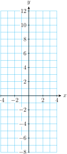

Section 3.1 Extraction of Roots
Subsection Introduction
So far you have learned how to solve linear equations. In linear equations, the variable cannot have any exponent other than 1, and for this reason such equations are often called first-degree. Now we'll consider second-degree equations, or quadratic equations. A quadratic equation includes the square of the variable.
Definition 3.1. Quadratic Equation.
A quadratic equation can be written in the standard form
where \(a,~b,~\) and \(c\) are constants, and \(a\) is not zero.
Checkpoint 3.2. QuickCheck 1.
We would like to be able to solve quadratic equations, use them in applications, and graph quadratic equations in two variables. Let's begin by considering some simple examples.
Subsection Graphs of Quadratic Equations
The simplest quadratic equation in two variables is
Its graph is not a straight line, but a curve called a parabola, shown in the figure. You can verify the table of values below for this parabola.
| \(x\) | \(-3\) | \(-2\) | \(-1\) | \(0\) | \(1\) | \(2\) | \(3\) |
| \(y\) | \(9\) | \(4\) | \(1\) | \(0\) | \(1\) | \(4\) | \(9\) |
Caution 3.3.
Be careful when squaring negative numbers. To evaluate the square of a negative number on a calculator, we must enclose the number in parentheses. For example,
Example 3.4.
Graph the parabola \(~y=x^2-4\)
We make a table of values and plot the points. The graph is shown below.
| \(x\) | \(-3\) | \(-2\) | \(-1\) | \(0\) | \(1\) | \(2\) | \(3\) |
| \(y\) | \(5\) | \(0\) | \(-3\) | \(-4\) | \(-3\) | \(0\) | \(5\) |
Checkpoint 3.5. Practice 1.
Subsection Solving Quadratic Equations
How can we solve a quadratic equation? Consider the equation
First, we can solve it graphically. Look again at the graph of \(~y=x^2-4~\) from Example 1.
We would like to find the \(x\)-values that make \(y=5\text{.}\) The horizontal line \(y=5\) intersects the graph at two points with \(y\)-coordinate 5, and their \(x\)-coordinates are the solutions of the equation. Thus, there are two solutions, namely \(3\) and \(-3\text{.}\)
Algebraically, we solve the equation as follows.
First, we isolate the variable. We add 4 to both sides, yielding \(~x^2=9\text{.}\)
-
Because \(x\) is squared in this equation, we perform the opposite operation, or take square roots, in order to solve for \(x\text{.}\)
\begin{align*} x^2 \amp = 9 \amp \amp \blert{\text{Take square roots of both sides.}}\\ x \amp = \pm \sqrt{9} = \pm 3 \amp \amp \blert{\text{Remember that every positive number}}\\ \amp \amp \amp \blert{\text{has two square roots.}} \end{align*}
The solutions are \(3\) and \(-3\text{,}\) as we saw on the graph.
Note 3.6.
Notice that we have found two solutions for this quadratic equation, whereas linear equations have at most one solution. (Sometimes they have no solution at all.) We shall see that every quadratic equation has two solutions, which may be equal. The solutions may also be complex numbers, which we'll study in Chapter 4.
Example 3.7.
Solve the equation
graphically and algebraically.
The figure shows the graph of \(~y=\dfrac{1}{2}x^2-7.\)
We would like to find the \(x\)-values that make \(y=8\text{.}\) The horizontal line \(y=8\) intersects the graph at two points with \(x\)-coordinates approximately \(5.5\) and \(-5.5\text{.}\) These are the solutions of the equation.
Algebraically, we solve the equation as follows.
First, we isolate the variable. We add 7 to both sides, then multiply by 2, yielding \(~x^2=30\text{.}\)
-
Because \(x\) is squared in this equation, we perform the opposite operation, or take square roots, in order to solve for \(x\text{.}\)
\begin{align*} x^2 \amp = 30 \amp \amp \blert{\text{Take square roots of both sides.}}\\ x \amp = \pm \sqrt{30} \amp \amp \blert{\text{Remember that every positive number}}\\ \amp \amp \amp \blert{\text{has two square roots.}} \end{align*} We use a calculator to find that \(\sqrt{30}\) is approximately 5.477, or about 5.5, as we saw on the graph.
Caution 3.8.
It is important to make a distinction betweeen exact values and decimal approximations.
For the example above, the exact solutions are \(\pm \sqrt{30}\text{.}\)
The values from the calculator, \(\pm 5.477\text{,}\) are decimal approximations to the solutions, rounded to thousandths.
Checkpoint 3.9. QuickCheck 2.
Which solutions are exact values, and which are approximations?
\(x^2=40, \qquad\qquad x=\pm 6.32455532\)
exact solutions
approximations
\(t^2=\dfrac{81}{64}, \qquad\qquad t=\pm 1.125\)
exact solutions
approximations
\(w^2=50, \qquad\qquad w=\pm 5\sqrt{2}\)
exact solutions
approximations
\(b^2=(0.632)^2, \qquad b=\pm 0.632\)
exact solutions
approximations
We can now solve quadratic equations of the form \(~ax^2+c = 0~\text{,}\) by isolating \(x\) on one side of the equation, and then taking the square root of each side. This method for solving quadratic equations is called extraction of roots.
Extraction of Roots.
To solve a quadratic equation of the form
Isolate \(x\) on one side of the equation.
Take the square root of each side.
Checkpoint 3.10. Practice 2.
In the next Example, we compare the steps for evaluating a quadratic expression and for solving a quadratic equation.
Example 3.11.
Tux the cat falls off a tree branch 20 feet above the ground. His height \(t\) seconds later is given by \(h=20-16t^2\text{.}\)
How high is Tux above the ground 0.5 second later?
How long does Tux have to get in position to land on his feet before he reaches the ground?
-
We evaluate the formula for \(t=0.5\text{.}\) We substitute \(\alert{0.5}\) for \(t\) into the formula, and simplify.
\begin{align*} h \amp= 20-16(\alert{0.5})^2 \amp \amp \blert{\text{Compute the power.}}\\ \amp = 20-16(0.25) \amp \amp \blert{\text{Multiply, then subtract.}}\\ \amp = 20-4=16 \end{align*}Tux is 16 feet above the ground after 0.5 second. You can also use your calculator to simplify the expression for \(h\) by entering
\(\qquad\qquad 20\) - \(16\) × \(0.5\) x^2 ENTER
-
We would like to find the value of \(t\) when Tux's height, \(h\text{,}\) is zero. We substitute \(h=\alert{0}\) into the equation to obtain
\begin{equation*} \alert{0} = 20-16t^2 \end{equation*}To solve this equation we use extraction of roots. We first isolate \(t^2\) on one side of the equation.
\begin{align*} 16t^2 \amp =20 \amp \amp \blert{\text{Divide by 16.}}\\ t^2 \amp = \dfrac{20}{16} = 1.25 \end{align*}Next, we take the square root of both sides of the equation to find
\begin{equation*} t=\pm \sqrt{1.25} \approx \pm 1.118 \end{equation*}Only the positive solution makes sense here, so Tux has approximately 1.12 seconds to be in position for landing.
A graph of the Tux's height after \(t\) seconds is shown below. The points corresponding to parts (a) and (b) are labeled.

Subsection Geometric Formulas
The formulas for the volume and surface area of some everyday objects, such as cylinders and cones, involve quadratic expressions. We can use extraction of roots to solve problems involving these objects.
Formulas for Volume and Surface Area.
Example 3.12.
The volume of a can of soup is 582 cubic centimeters, and its height is 10.5 centimeters. What is the radius of the can, to the nearest tenth of a centimeter?
The volume of a cylinder is given by the formula \(V=\pi r^2h\text{.}\) We substitute \(\alert{582}\) for \(V\) and \(\alert{10.5}\) for \(h\text{,}\) then solve for \(r\text{.}\)
The radius of the can is 4.2 centimeters.
Checkpoint 3.13. Practice 3.
The glass pyramid at the Louvre in Paris has a square base, is 21.64 meters tall, and encloses a volume of 9049.68 cubic meters. Use the formula \(~ V=\dfrac{1}{3}s^2h~\) to find the length of the base. Round your answer to hundredths.
Answer: meters
Subsection Solving Formulas
Sometimes it is useful to solve a formula for one variable in terms of the others. You might want to know what radius you need to build cones of various fixed volumes. In that case, it is more efficient to solve the volume formula for \(r\) in terms of \(v\text{.}\)
Example 3.14.
The formula \(~V=\dfrac{1}{3}\pi r^2h~\) gives the volume of a cone in terms of its height and radius. Solve the formula for \(r\) in terms of \(V\) and \(h\text{.}\)
Because the variable we want is squared, we use extraction of roots. First, we multiply both sides by 3 to clear the fraction.
Because the radius of a cone must be a positive number, we use only the positive square root: \(\quad r = \sqrt{\dfrac{3V}{\pi h}}\text{.}\)
Checkpoint 3.15. Practice 4.
Checkpoint 3.16. QuickCheck 3.
Match each quantity with the appropriate units.
Height of a cylinder
I
II
III
IV
Volume of a cone
I
II
III
IV
Surface area of a sphere
I
II
III
IV
Area of a triangle
I
II
III
IV
Square meters
Feet
Cubic centimeters
Kilograms
Subsection More Extraction of Roots
We can also use extraction of roots to solve quadratic equations of the form
We start by isolating the squared expression, \(~(x-p)^2\text{.}\)
Example 3.17.
Solve the equation \(~3(x-2)^2=48\text{.}\)
First, we isolate the perfect square, \(~(x-2)^2\text{.}\)
This gives us two equations for \(x\text{,}\)
The solutions are \(6\) and \(-2\text{.}\) You can check that both of these solutions satisfy the original equation.
Checkpoint 3.18. Practice 5.
Solve \(2(5x + 3)^2 = 38\) by extracting roots.
-
Give your answers as exact values, separating the solutions with a comma.
Note: Enter “sqrt(2)” to get \(\sqrt{2}\text{,}\) and take care to use parentheses appropriately.
Use the “Preview My Answers” button to see if you have entered valid syntax.
Find approximations for the solutions to two decimal places, separating the solutions with a comma.
Checkpoint 3.19. QuickCheck 4.
True or false.
The first step in extraction of roots is to take square roots.
True
False
The solutions of a quadratic equation are always of the form \(~\pm k\text{.}\)
True
False
Your calculator gives exact decimal values for square roots of integers.
True
False
The coefficients of a quadratic equation are called parabolas.
True
False
Subsection An Application: Compound Interest
Many savings accounts offer interest compounded annually: at the end of each year the interest earned is added to the principal, and the interest for the next year is computed on this larger sum of money. After \(n\) years, the amount of money in the account is given by the formula
where \(P\) is the original principal and \(r\) is the interest rate, expressed as a decimal fraction.
Example 3.20.
Carmella invests $3000 in an account that pays an interest rate \(r\) compounded annually.
Write an expression for the amount of money in Carmella's account after two years.
What interest rate would be necessary for Carmella's account to grow to $3500 in two years?
-
We use the formula \(A=P(1+r)^n\) with \(P=3000\) and \(n=2\text{.}\) Carmella's account balance will be
\begin{equation*} A=3000(1+r)^2 \end{equation*} -
We substitute \(\alert{3500}\) for \(A\) in the equation.
\begin{equation*} \alert{3500}=3000(1+r)^2 \end{equation*}This is a quadratic equation in the variable \(r\text{,}\) which we can solve by extraction of roots. First, we isolate the perfect square.
\begin{align*} 3500 \amp = 3000(1+r)^2 \amp \amp \blert{\text{Divide both sides by 3000.}}\\ 1.1\overline{6} \amp = (1+r)^2 \amp \amp \blert{\text{Take square roots.}}\\ \pm 1.0801 \amp \approx 1+r \amp \amp \blert{\text{Subtract 1 from both sides.}}\\ r \approx 0.0801 \amp \text{or}~~~~r \approx -2.0801 \end{align*}Because the interest rate must be a positive number, we discard the negative solution. Carmella needs an account with interest rate \(r \approx 0.0801\text{,}\) or over 8%, in order to have an account balance of $3500 in two years.
The formula for compound interest also applies to calculating the effects of inflation. For instance, if there is a steady inflation rate of 4% per year, then in two years the price of an item that costs $100 now will be
Checkpoint 3.21. Practice 6.
Exercises Problem Set 3.1
Warm Up
1.
Simplify.
\(\displaystyle 4-2\sqrt{64}\)
\(\displaystyle \dfrac{4-\sqrt{64}}{2}\)
\(\displaystyle \sqrt{9-4(-18)}\)
2.
Give a decimal approximation rounded to thousandths.
\(\displaystyle 5\sqrt{3}\)
\(\displaystyle \dfrac{-2}{3}\sqrt{21}\)
\(\displaystyle -3+2\sqrt{6}\)
3.
Use the definition of square toot to simplify the expression.
\(\displaystyle \sqrt{29}(\sqrt{29})\)
\(\displaystyle (\sqrt{7})^2\)
\(\displaystyle \dfrac{6}{\sqrt{6}}\)
4.
Solve. Remember that every positive number has two square roots.
\(\displaystyle 3x^2=147\)
\(\displaystyle 4x^2=25 \)
\(\displaystyle 3x^2=15\)
5.
-
Complete the table and graph \(~y=2x^2-5\text{.}\)
\(~x~\) \(-3~\) \(-2~\) \(-1~\) \(~0~\) \(~1~\) \(~2~\) \(~3~\) \(~y~\) \(\) \(\) \(\) \(\) \(\) \(\) \(\)  Use the graph to solve the equation \(~2x^2-5=7\text{.}\) Show your work on the graph. How many solutions did you find?
Solve the equation \(~2x^2-5=7~\) algebraically, by "undoing" each operation.
6.
Use the Pythagorean theorem to find the unknown side.
Skills Practice
Exercise Group.
For problems 7–14, Solve by extracting roots. Give exact values for your answers.
7.
\(3x^2-9=0\)
8.
\(\dfrac{3x^2}{5}=6\)
9.
\((2x-1)^2=16\)
10.
\(4(x-1)^2=12\)
11.
\((x-\dfrac{2}{3})^2=\dfrac{5}{9}\)
12.
\(81(x+\dfrac{1}{3})^2=1\)
13.
\(3(8x-7)^2=24\)
14.
\(2(5x-12)^2=48\)
Exercise Group.
For problems 15 and 16, solve by extracting roots. Round your answers to two decimal places.
15.
\(5x^2-97=3.2x^2-38\)
16.
\(17-\dfrac{x^2}{4}=43-x^2\)
Exercise Group.
For problems 17 and 18,
Use technology to graph the quadratic equation in the suggested window.
Use your graph to find two solutions for the equation in part (b).
Check your solutions algebraically, using mental arithmetic.
17.
\(y=3(x-4)^2\)
\begin{align*} \text{Xmin} \amp = -5 \amp \amp \text{Ymin} = -20\\ \text{Xmax} \amp = 15 \amp \amp \text{Ymax} = 130 \end{align*}\(\displaystyle 3(x-4)^2 = 108\)
18.
\(y=\dfrac{1}{2}(x+3)^2\)
\begin{align*} \text{Xmin} \amp = -15 \amp \amp \text{Ymin} = -5\\ \text{Xmax} \amp = 5 \amp \amp \text{Ymax} = 15 \end{align*}\(\displaystyle \dfrac{1}{2}(x+3)^2 = 8\)
Exercise Group.
For problems 19–22, solve the formula for the specified variable.
19.
\(F=\dfrac{mv^2}{r},~\) for \(v\)
20.
\(S=4 \pi r^2,~\) for \(r\)
21.
\(L=\dfrac{8}{\pi^2}T^2,~\) for \(T\)
22.
\(s= \dfrac{1}{2}gt^2,~\) for \(t\)
Applications
Exercise Group.
For problems 23 and 24,
Make a sketch of the situation described, and label a right triangle.
Use the Pythagorean theorem to solve each problem.
23.
The size of a TV screen is the length of its diagonal. If the width of a 35-inch TV screen is 28 inches, what is its height?
24.
24 a 30-meter pine tree casts a shadow of 30 meters, how far is the tip of the shadow from the top of the tree?
25.
You plan to deposit your savings of $1600 in an account that compounds interest annually.
Write a formula for the amount, \(A\text{,}\) in your savings account after two years in terms of the interest rate, \(r\text{.}\)
-
Complete the table showing your account balance after two years for various interest rates.
\(~r~\) \(0.02\) \(0.04\) \(0.06\) \(0.08\) \(~A~\) \(\) \(\) \(\) \(\) To the nearest tenth of a percent, what interest rate will you require if you want your $1600 to grow to $2000 in two years?
Use your calculator to graph the formula for the account balance. Locate the point on the graph that corresponds to the amount in part (b).
26.
Two years ago Carol's living expenses were $1200 per month. This year the same items cost Carol $1400 per month. What was the annual inflation rate for the past two years?
27.
What size rectangle will fit inside a circle of radius 30 feet if the length of the rectangle must be three times its width?
28.
A storage box for sweaters is consturcted from a square sheet of cardboard measuring \(x\) inches on a side. The volume of the box, in cubic inches, is
If the box should have a volume of 1960 cubic inches, what size cardboard square is needed?
29.
A large bottle of shampoo is 20 centimeters tall and cylindrical in shape.
Write a formula for the volume of the bottle in terms of its radius.
-
Complete the table of values for the volume equation. If you cut the radius of the bottle in half, by what factor does the volume decrease?
\(~r~\) \(~1~\) \(~2~\) \(~3~\) \(~4~\) \(~5~\) \(~6~\) \(~7~\) \(~8~\) \(~V~\) \(\) \(\) \(\) \(\) \(\) \(\) \(\) \(\) What radius should the bottle have if it must hold 240 milliliters of shampoo? (A milliliter is equal to one cubic centimeter.)
Use your calculator to graph the volume equation. (Use the table to help you choose a suitable window.) Locate the point on the graph that corresponds to the bottle in part (c). Make a sketch of your graph, and lable the scales on the axes.
30.
The area of a ring is given by the formula
where \(R\) is the radius of the outer circle, and \(r\) is the radius of the inner circle.

Suppose the inner radius of the ring is kept fixed at \(r=4\) centimeters, but the radius of the outer circle, \(R\text{,}\) is allowed to vary. Find the area of the ring when the outer radius is 6 centimeters, 8 centimeters, and 12 centimeters.
-
Graph the area equation, with \(r=4\text{,}\) in the window
\begin{align*} \text{Xmin} \amp = 0 \amp\amp \text{Xmax} = 14.1\\ \text{Ymin} \amp = 0 \amp\amp \text{Ymax} = 400 \end{align*}Use the Trace to verify your answers to part (a).
Trace along the curve to the point \((9.75, 248.38217)\text{.}\) What do the coordinates of this point represent?
Use your graph to estimate the outer radius of the ring when its area is 100 square centimeters.
Write and solve an equation to answer part(d).
Exercise Group.
For Problems 31 and 32, solve for \(x\) in terms of \(a\text{,}\) \(b\text{,}\) and \(c\text{.}\)
31.
\(\displaystyle \dfrac{ax^2}{b} = c\)
\(\displaystyle \dfrac{bx^2}{c} - a = 0\)
32.
\(\displaystyle (x-a)^2 = 16\)
\(\displaystyle (ax+b)^2 = 9\)